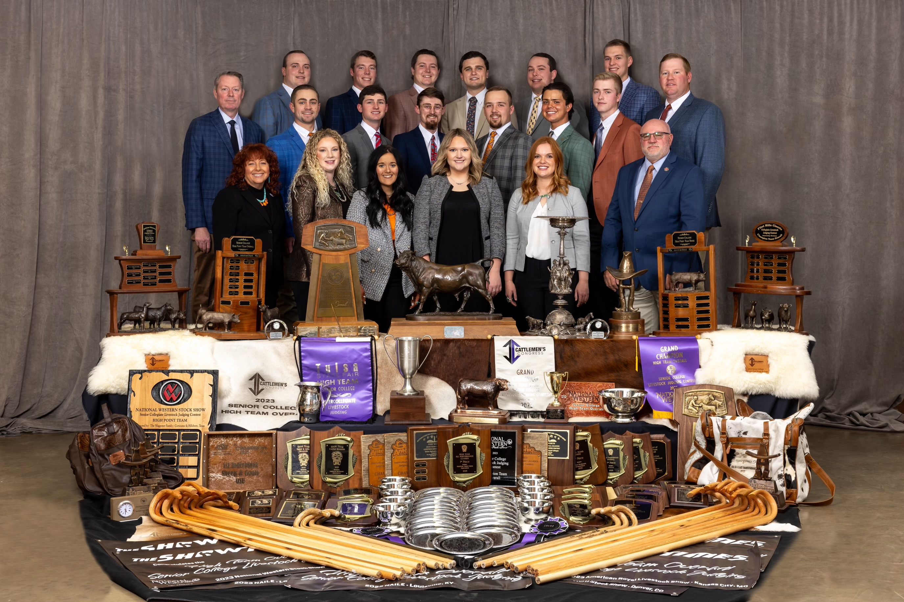

Livestock Judging

The OSU Livestock Judging Team has a long and distinguished history, beginning in 1899 when Frank Burtis introduced livestock evaluation at OSU. The team first competed outside Oklahoma in 1902 at the American Royal Livestock Exposition in Kansas City. Over the years, the team has seen numerous successes and faced various challenges, including the cancellation of contests during World War I and World War II. Key milestones include:
· 1925-1928: The team won three national championships under the direction of A.E. Darlow and W.L. Blizzard.
· 1948: Dr. Robert Totusek, a student at the time, was part of the national championship team at the Chicago International. He later returned to OSU as a faculty member and coached the judging team from 1953 to 1961, significantly contributing to the program’s success.
· 1954: Minnie Lou Ottinger became the first woman to be the high individual in the National Collegiate Livestock Judging Contest.
· 1975: Jarold Callahan was a member of the team that year. He later joined the OSU faculty and coached the judging team from 1981 to 1990, contributing significantly to its success.
· 1985: Mark Johnson was a member of the team and achieved the High Individual Overall at the American Royal. He later became the OSU Livestock Judging Team coach from 1992 to 2013.
· 2017-2019: Coach Blake Bloomberg led the team to three consecutive national championships.
· 2021-2023: Coach Parker Henley led the team to three consecutive national championships, officially making OSU the winningest program in history.
The team has consistently performed well in various contests, including the NWSS, Fort Worth, American Royal, and NAILE, among others. The program has produced many successful breeders and influential leaders in the livestock industry.
National Championships: 1925, 1926, 1928, 1930, 1948, 1954, 1957, 1961, 1979, 1981, 1989, 1990, 1991, 2001, 2005, 2010, 2012, 2017, 2018, 2019, 2021, 2022, 2023
List of Past Coaches
1. Frank Burtis (1899-1912)
2. Charles I. Bray (1913-1914)
3. Warren L. Blizzard (1918-1925)
4. Albert Darlow (1926-1934)
5. C. P. Thompson (1935-1936)
6. Bruce Taylor (1937-1942)
7. Glen Bratcher (1946-1952)
8. Robert Totusek (1953-1961)
9. Jack McCroskey (1962-1965)
10. Don Pinney (1966-1971)
11. Bob Kropp (1972-1981)
12. Kim Brock (1981, 1991)
13. Jarold Callahan (1981-1990)
14. Mark Johnson (1992-2013, 2020)
15. Blake Bloomberg (2014-2019)
16. Parker Henley (2021-present)
The livestock judging program at OSU has a rich tradition of not only winning judging competitions but also, more importantly, in preparing students for future success and creating career opportunities. Each year, the OSU Livestock Judging Team visits many of the top purebred and commercial operations across the country to prepare for the 12 contests it competes in annually.
Workouts include seeing some of the nation’s best livestock and meeting many of the master breeders and top managers at the country’s elite livestock operations. Livestock judging team participation increases the visibility of OSU students. This, coupled with the success of OSU teams, contributes largely to the OSU Animal Science Department’s continued success in job placement of judging team members upon completion of their degree. In addition to the potential career benefits of participating on the OSU livestock team, scholarships earned in livestock judging competitions help students further their education.
Upon reviewing the history of the OSU Livestock Judging Team, it is apparent that many of the most successful breeders and influential leaders in the livestock industry trace their roots back to OSU teams. Since 1925, the first time an OSU Livestock Judging Team claimed victory at the International in Chicago, OSU students have earned more National Championships (23) in livestock judging competition than any other university in the country. Over 900 students have participated on the OSU Livestock Judging Team. Survey data indicates that the vast majority of judging team alumni feel their livestock judging experience was highly influential on their development of critical thinking, communication, and leadership skills. These alumni consider their livestock judging experience to be as beneficial as any college course or activity on their ultimate career success and feel this experience will be equally beneficial to future students.